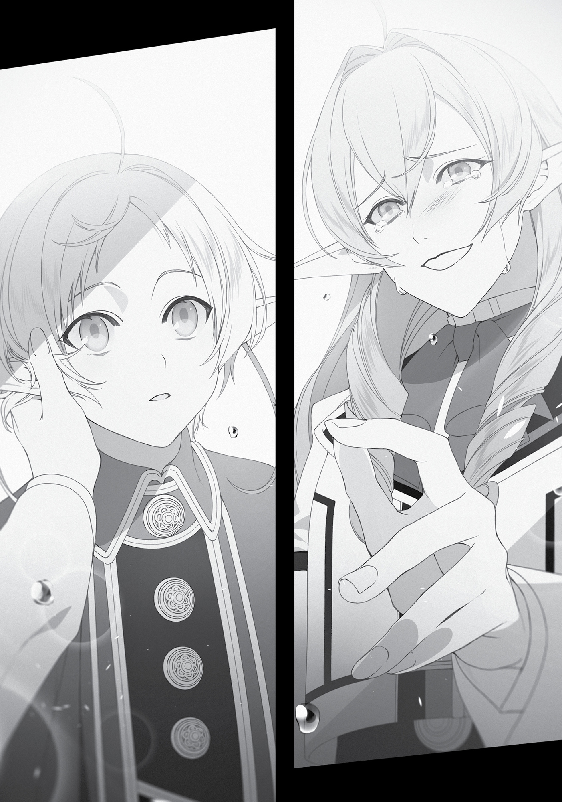

Chapter 6:
Hosting the Wedding Reception
A FEW DAYS LATER…
We planned to hold the wedding reception in the afternoon, since it fell on a holiday. Jenius declined our invitation, as did Soldat, on account of being busy with meetings. I figured Badigadi would be too busy to come as well, but surprisingly, he was free and indicated he would attend. The other eleven invitations we’d sent out were all accepted. Yes, even Nanahoshi’s.
On the day of the reception, Sylphie was all fired up from the very moment she woke. “This is a wife’s job, so just leave it to me!” she said as she bustled around the house. We’d prepped an empty room on the second floor for the occasion, by which I meant we’d furnished it with a modest bed, closet, and table, plus a water pitcher in case someone happened to get sick and needed it.
Linia and Pursena were the first to show up, right in the midst of our steadily progressing preparations. They had arrived two hours early.
Don’t tell me they got the time wrong, I thought.
“It’s customary in our culture for those attending to arrive early and bring their own kill, mew.”
“That’s right. We got here first. A show of our loyalty.”
A giant boar sat atop the snow sled they’d dragged behind them. Apparently it was beastfolk tradition, when attending a wedding, to go hunting in the morning and offer their kill to the host. How early one went out to hunt, make a kill and return with it were all a measure of your respect for the host.
“Incredible. But what did you plan on doing if you weren’t able to hunt anything down?”
“In that case we planned to buy something in the markets, mew.”
“Yeah, we’d use money instead.”
Guess that made sense.
They were both wearing their school uniforms. That was something I had decided on. There was a vast wealth disparity among the invited guests, so if the rich ones overdid it with their outfits, it would just make the regular attendees feel out of place. Fortunately, everyone participating had their own uniform—except Julie, so we bought her one.
I bid them relax in the living area until the festivities were ready to begin. Entertaining guests was the husband’s job. They’d been outside since this morning, and were freezing. They settled down on the couch closest to the fireplace and curled up against each other.
“Everything else aside, I never imagined you and Fitz would get married, Boss, mew.”
“So Fitz was a girl after all. I wondered about that, based on her smell.”
“Yeah, mew. But now it all makes sense, mew.”
The two of them groomed each other’s tails as they spoke. We’d shared Fitz’s real identity with the invitees, asking that they keep it to themselves for now, though it was inevitable the truth would eventually become public at this point.
“What makes sense?” I asked as I served them warm tea.
“That you have a preference for flat chests,” Pursena said.
“Even though the stench of arousal is just oozing out of you, the reason you didn’t attack us was because we’re not your type, mew.”
They spoke as if I were some kind of pervert that indiscriminately attacked any woman I saw. Honestly, how rude of them. Maybe I should thoroughly grope them in retaliation—but no. I’d already sated myself with Sylphie the day before. All of my desire rested within her now. Today I was a sage.
The next to arrive were, surprisingly, Zanoba and Julie. They came about an hour before the party. “Pardon. I spied an interesting figurine on the way here, and it distracted me. I would have been in trouble if Julie hadn’t been with me,” he said.
Julie was wearing her uniform as well. It was dwarf-sized, and fit her so perfectly she looked cute as a button. “Grandmaster, thank you for inviting us today,” she said as she lifted the edge of her skirt slightly in a polite greeting. Aww, how cute.
Zanoba bowed again when I glanced his way. Then, in a deeply respectful tone, he said, “Master Rudeus Greyrat. I am deeply grateful for your invitation.”
Wow. Zanoba was being normal. Very good. Then maybe I should follow his example and reply with the same level of sincerity.
“Zanoba, Your Highness, you have my gratitude for—”
“Oh, Master. There’s no need to show me such courtesy. I know it’s just for appearance’s sake, anyway. I’d much prefer you be rude to me, like you usually are.”
“Oh, okay. Well, then go hang out in that room.”
“Ha ha, very well. Come then, Julie, let us be off.”
What the heck? And there I was, trying to be serious. What a waste, I thought as I prepared more tea. I was still the host and he was still a guest, even if I treated him rudely. While thusly preoccupied, I heard Linia’s and Pursena’s boastful voices drifting from the living room. They were bragging about how they’d gotten here first. I could hear the frustration in Zanoba’s replies, but I was just glad they were enjoying themselves.
Third to arrive was Ariel and her group, thirty minutes before the start of the party. There was Ariel, Luke, and two other female students I’d seen somewhere before. So these two were the Princess’ attendants? Which meant they were also Sylphie’s comrades in battle. I couldn’t afford to ignore them.
“I am most grateful for your invitation today. Unfortunately, I am a bit unfamiliar with the etiquette of common people, so I pray you will forgive me for any discourtesies,” Ariel said as she bowed. I’d assume Luke or the attendants would be the ones to bow, but perhaps she was trying to be polite.
“There are guests of many different races gathered here, so please don’t worry about etiquette,” I said. “In fact, I’m more concerned that you’ll be the one shown discourtesy.”
“My thanks. Ladies?” She gave a signal with her eyes and the two attendants came forward.
“We are Princess Ariel’s attendants. I’m Ellemoi Bluewolf.”
“And I am Cleane Elrond.”
Their first names aside, their last names were at least easy to remember. A blue wolf and a legendary elf. My name was “gray rat”, so perhaps there were many among the Asuran nobility whose names were a combination of a color and an animal. Maybe there was even someone with a name like… Hm, what was the other word for donkey again? Oh yes, ass. Maybe someone had the last name Whiteass.
“Please accept this.” The two offered me a box wrapped in expensive fabric. “A gift to celebrate your wedding.”
“Thank you; this is very thoughtful,” I replied.
“We brought things we thought might be of use to a married couple. Please see for yourself.”
At her bidding, I took a peek inside, only to find myself speechless. Nestled within was a familiar bottle of pink liquid and a wooden rod. To put it more bluntly, it was an aphrodisiac and a long dildo. What the heck?
“I am sure that, as a member of the Greyrat family, you’re perfectly capable of satisfying women. But should the need arise, please use these.”
“S-sure.”
Ariel was completely composed. Maybe this was considered a normal gift? Luke and the other two looked unruffled as well. It must be a cultural difference.
I guided the four of them into the living area. The atmosphere around Linia and Pursena turned tense as soon as we entered.
“…”
There was no way they were actually going to start a fight, right? Yes, they were beastfolk, but they wouldn’t disrupt a celebration they’d been invited to, would they? I gave them both a meaningful look. They seemed to sense what I was thinking.
“Nice to see you, Miss Linia, Miss Pursena. My apologies for the trouble before.”
“Nice to see you too, mew.”
“We caused you trouble too, so it’s fine,” Pursena added.
Ariel greeted them gently, taking a nearby seat. The other three remained standing. I shot Zanoba a look, signalling that he should intervene in case anything happened. He nodded sharply and, as if he’d completely misunderstood, got to his feet and bowed toward Ariel.
“A pleasure to make your acquaintance, Princess Ariel. I am the Third Prince of the Shirone Kingdom and beloved pupil of Master Rudeus Greyrat, Zanoba Shirone.”
“Pleasure to see you again, Prince Zanoba. I am glad to see you are in good health. I paid you a visit soon after you entered the university. Could it be you’ve forgotten?”
“Ah. I apologize for my rudeness. It seems that while I’ve been blessed with super strength, I’m lacking when it comes to intelligence.”
“Truly? I’ve heard that you had top grades in your earth magic class,” the Princess replied.
“That is entirely thanks to my master’s teachings.”
I listened in while preparing their tea, shocked at Zanoba’s refined social skills.
Cliff and Elinalise showed up just ten minutes before the celebration was supposed to begin. Nanahoshi accompanied them. What an unusual combination. I’d expected Nanahoshi to come alone.
“She was standing outside your gate looking flustered. She’s an acquaintance of yours, yes?” Elinalise asked.
“Yes, of course. This is Miss Silent Sevenstar.”
When I said her name, Cliff looked at her in shock. Apparently, they had never met. “O-oh! So you’re the one they call Silent, huh? Hmph. I’m Cliff. I’m sure you’ve at least heard of me before, right?”
“Yes, I have. They say you’re amazing. And yes, I’m Silent.” Her speech sounded stilted and unnatural, probably because she was only pretending to know who Cliff was. Cliff seemed to be in a pleasant mood, though, so I wasn’t going to say anything.
“Pleased to meet you. I am Elinalise Dragonroad. That’s an incredible mask.”
“A pleasure. Your hairstyle is amazing, too,” Nanahoshi replied in a completely flat tone. Watching how she interacted with them made me nervous. Still, she surely wouldn’t start anything, since she wanted to avoid trouble.
Honestly, I hadn’t thought she’d come. I’d sent her an invitation just in case, which she’d accepted. But even then, I hadn’t thought she would actually attend. She’d just responded, in a voice devoid of emotion, “Marriage? I guess you really are serious about living here in this world.”
“This is rare,” I said to her in a low voice. “Seeing you outside that room.”
“You’re the one who invited me, aren’t you?”
“True enough. Well, just relax today. We made potato chips for you.”
“Potato chips? You actually made them?” she asked in surprise.
“We procured cooking oil quite easily, thanks to you.”
“That’s remarkable.”
“Not really. All we did was slice a potato thinly, fry it in oil, then cover it in salt. Since the ingredients were from this world, it has a slightly different flavor from the chips we enjoyed in our previous one.”
“Well then, if you’ll excuse us.” Elinalise charged into the living room, dragging Cliff and Nanahoshi along without an ounce of hesitation. As an adventurer of no noble title, she ranked just above Julie in terms of status, but clearly, she didn’t care. Granted, notions of status didn’t translate smoothly from one race to another.
The two of them were their usual selves: Cliff threatening to ruin the mood with his bragging, Elinalise smoothing over his behavior. Cliff meant well, but often came across as acerbic. Nanahoshi was generally quiet, but she responded if someone spoke to her. I’d thought she was a shut-in with communication issues, but it seemed that wasn’t the case.
After a while, Sylphie came to inform me that preparations were complete. Now we were just waiting on Badigadi. The food would get cold if he was too late, but just as I started to worry, Elinalise spoke up.
“There’s absolutely no way Badigadi will be here soon. Beings who’ve lived thousands of years have no concept of how time passes for the rest of us. You should probably expect him a month from now.”
And so, we decided to go ahead and start the party on time. Sorry, Badi.
***
The party was a cocktail-style buffet. We’d decided to do away with assigned seating, but fortunately, the room was spacious enough that people could move about even with the table in the middle. We did leave some chairs at the edge of the room in case anyone got tired of standing. The menu was all food that could easily be eaten while standing, and we started by offering everyone a cup of alcohol. Nanahoshi turned down the liquor, so we gave her fruit juice instead.
I was in charge of the speech for our toast. Sylphie and I stood beside each other, the center of attention. Eleven pairs of eyes gazed expectantly at us. There was nothing unpleasant about their gazes, but I still felt nervous even though I had a speech prepared.
Sylphie squeezed my hand. She gave me a toothy grin and whispered, “You can do it.”
Ah, she makes me want to carry her off to the bedroom right now, I thought.
“My, my, Rudeus’ face is bright red. Heh heh.”
Elinalise laughed and, for once, Cliff actually read the room. “Lise, be quiet.”
Okay then, here goes.
“Ahem. Thank you for making room in your busy schedules to be with us today. Allow me to make this declaration once again. Sylphie and I are—”
“Bwahaha! And now I enter with a ba-bang!”
I thought my heart was going to punch right through my chest from surprise. I looked behind me, and there he was. That black body and tall figure. The six arms, all stuffed into a school uniform bursting at the seams. The Immortal Demon King Badigadi had entered with a bang…through the back door in the kitchen.
His arrival left everyone speechless, even Cliff. I, too, had no idea what to say.
“Badgadi, you’re late,” Elinalise cleverly cut in.
But Badigadi wasn’t the least bit concerned. “Hmph. It’s true I am late, but in my tribe, when a Demon King attends a party, they must wait for the perfect moment to astonish and disrupt the occasion with their entrance. Such is our way.”
“You’re kidding, right?”
“Not at all. Though Kishirika did make up that particular custom on a whim, so I agree it’s ridiculous!”
And yet he still did it? What an irrational person. This was why you guys’ve been eradicated by the humans so many times…
“I even went out of my way to enter through the back door. Be grateful! Bwahaha!”
You bastard, I started to think, then stopped myself. No, calm down. This is just how he is. You already knew that, didn’t you?
“Ha ha ha, all right then. Thank you.”
“No need for thanks. Now then, carry on and marry yourselves before me. Few get to marry in the presence of a Demon King. I don’t provide those kinds of services, after all!” Badigadi said, before plunking himself on the ground.
We have chairs, I protested inwardly. But many among the demon folk preferred sitting on the floor, so I guessed it was fine.
“Well then, returning to our previous order of business…” I cleared my throat. “Thank you for making time in your busy schedules to be with us today. Allow me to make this declaration once again. Sylphie and I are getting married. I realize the two of us are still young and lacking in many aspects, but I hope we will have a fruitful life together. Uh, all twelve of you gathered here have been especially close to us within these past couple of years. We’ve spent less time with some of you than others, but somehow, we were all able to get along, and I consider you friends. Should you ever find yourselves in trouble, I hope to be there to support you, as your friend. Should you ever experience discord amongst yourselves, I hope you’ll remember us and try to be the bigger person and let things go. Um…”
Oh crap, this speech was way too stiff. They all had questionable looks on their faces.
Just then Badigadi gave me a soft pat on the shoulder. “No need for such formality. You two love each other and you want everyone here to recognize that, yes?”
Oh! Yes, exactly. That was it. Okay! “Well, how to put it? Sylphie and I will be moving forward with our relationship. I hope you’ll be there for us if we need you. Thank you, everyone.”
“Okay, now let us toast to the future of the young couple!”
“Cheers!”
Badigadi raised a wine cup that he’d swiped at some point without me noticing. Everyone joined him by raising theirs. A bit of alcohol was spilled as the party began.
***
Pursena went straight for the boar meat that had still been steaming just moments ago. I wondered if it was conventional for beastfolk to first eat the prey they’d caught themselves…no, this was definitely just a Pursena thing. Linia was by the fireplace, munching away at some nanahoshiyaki, the imitation fried chicken.
Nanahoshi had grabbed a plate of potato chips and retreated to a corner of the room where she was crunching away. Julie suddenly took a seat beside her. Nanahoshi looked dumbfounded, but Julie ignored her and shoveled chips into her mouth. Just the other day, she’d eaten some for us as a taste tester. She must have been angling for them ever since.
Nanahoshi and Julie. They made an interesting picture, side by side. Perhaps thinking the same, Badigadi approached them. Nanahoshi panicked and whipped out one of her rings. That idiot. She claimed she didn’t want trouble, but then guarded her food like a lioness.
I noticed Zanoba glancing over at me. I wasn’t sure what he wanted, but it seemed he was waiting for Ariel to make her move—and she did soon after, guiding her entourage over to where Sylphie and I stood.
“Sylphie, congratulations.”
“Princess Ariel, thank you.” Sylphie gave her usual toothy smile and bowed her head.
“So, do Rudeus and this house meet your expectations?”
“They’re even more amazing than I’d hoped for. The house even has a bath in it!”
“Oh? Very few personal homes have baths in Asura. I’m envious. Sylphie, you know you can take a year’s break from being my bodyguard, if you’d like.”
“I-I’ll save that for when we have kids.”
Ariel giggled. Sylphie went on to chat with Luke and the princess’ attendants, the latter of whose names I’d only just learned today. Apparently, they had a strong bond with Sylphie. They seemed close, and the blue wolf girl had tears in her eyes. It was almost like watching girls at the track club say goodbye.
“Well, I figure you still don’t like me, but let’s try to get along,” Luke said, holding his hand out to me all of a sudden.
Despite what he said, I didn’t have any animosity toward him. Well, I was ready to be friendly if he was. “Sounds good to me, Luke…sir.”
“Take good care of Sylphie.” He let go of my hand after that short remark. To be honest, it felt like Luke was the one who didn’t like me. What was it exactly? It wasn’t exactly jealousy, but I couldn’t put my finger on it.
Zanoba came over once Ariel had left. It seemed he was paying heed to social hierarchies, which made sense, given that he was royalty. “Once again, Master, I offer my congratulations.”
“Thank you, Zanoba.”
He turned toward Sylphie and bowed. “My lady. I honestly thought you were a man. Please forgive me for making such a shameful mistake.”
Sylphie hurriedly waved her hand. “Oh, no, please raise your head. You’re royalty. You can’t be bowing to someone like me.”
“‘Someone like you’? I deeply respect my master, and you’re his wife. Your holiness is second only to God.”
“But even Rudy mistook me for a man, so it’s fine, okay?”
She looked to me for backup. As embarrassing as it was, it was true, so I nodded in agreement. Once Zanoba left, Linia and Pursena came next.
“Is it considered good manners among humans to greet each other in the middle of meals, mew?”
“It’s bad form.”
That was all they said. They didn’t even congratulate us, really. I would definitely need to investigate beastfolk wedding etiquette beforehand when it came time for these two to get married. Though I had no idea if they could even find partners.
“But it does make sense for the two of you to get married. It’s good when strong people get together, mew.”
“That’s right. Strong children bring tranquility to the tribe.”
In my opinion, it was “bad form” to speak so candidly in the middle of a meal.
Next to approach was Nanahoshi, who’d managed to get away from Badigadi…who’d been doing who-knew-what, since her hair was a mess. I looked in his direction to see him currently having a blast letting Julie ride on his shoulders.
“Congratulations.”
“Thanks.”
She started to retreat after that short remark, but Sylphie stopped her. “Um, Miss Nanahoshi, can I ask you something?”
“What would that be?”
“You said before that the two of you come from the same place. But what did that mean? Um, correct me if I’m wrong, but you come from a different world, right?” Sylphie’s voice dropped to a whisper in the latter half of her question.
Nanahoshi looked at me as if to ask what I wanted to do. I didn’t mind which way she answered. I wasn’t trying to hide anything from Sylphie…though she might look at me funny if she found out. It would be tricky to explain.
“I misunderstood, since he spoke the same language as me,” Nanahoshi said. Well, that decided it.
Last to approach us were Cliff and Elinalise. Cliff had us line up, and then he cut a cross-like shape through the air with one hand, offering a simple prayer. “The two of you aren’t followers of Millis, but this is the only blessing I know.”
I was happy for the sentiment, at least. After all, it was extremely common for people to celebrate Christmas but not partake in Mass. I had a god I believed in, but she wouldn’t mind if I accepted the blessings of another religion.
“Rudeus, I’m happy for your recovery,” Elinalise said, with a slightly pouty look on her face. That’s right. I hadn’t told her that my impotence had been cured until now. “You know you could have told me a little sooner.”
“And if I had told you, you would’ve made a move on me. ‘Let me see for myself if that’s true,’ etc. etc.”
“I’d never. I told you before, didn’t I? I have no intention of becoming Paul’s daughter.”
So that was how it was. Maybe I should have told her sooner. Among this lot, she was the one I’d known the longest. Granted, it was only by six months or so.
“But then again, if Cliff wasn’t with me, I might have entertained the idea of doing it with you once.”
“I might have felt the same way if I didn’t have Sylphie.”
“Well, that’s unfortunate, isn’t it? Since it wasn’t in the cards for us, let’s just continue being friends, then.”
“Yeah, let’s keep it that way.”
Elinalise turned her attention to Sylphie, a gentle expression on her face. “Miss Sylphiette, congratulations. I pray for…for your…happiness from…from the bottom of…” Tears started rolling down Elinalise’s cheeks. She continued looking at Sylphie as a sob escaped from her throat.
I was dumbfounded. I had no idea why she was crying all of a sudden.
Elinalise reached out to touch Sylphie’s cheek with a trembling hand. Then her legs started to shake and gave out from under her. Her face was a complete mess, but she just continued to look at Sylphie. “I’m sorry. I can’t believe I’m doing this…”
Sylphie had to be shocked, too. Or at least, I thought she would be—but instead, she looked only mildly puzzled, not surprised.
“Um,” Sylphie said. “I’ve been meaning to ask you this for a while, but Miss Elinalise… are you perhaps my grandmother?”
I wasn’t the only one flabbergasted. Cliff—and Elinalise—looked utterly dumbfounded, too.
“Father told me that my grandmother was one of Rudy’s father’s companions,” Sylphie explained.

Had he really said that? Wait…that made sense, actually. Laws had said he and Paul became friends while he was helping guard the village. Maybe he’d figured out Paul’s connection to Elinalise through their conversations, though I doubted Paul knew of it.
It was a small world. Now that I thought about it, the wood-carved pendant that Sylphie made me had the same shape as the pendant on Elinalise’s sword. In fact, their facial features were similar, too.
“Miss Elinalise, is that really true?” I asked.
“Y-you’re mistaken. There’s no way your grandmother could be a whore like me.”
“My father told me it was because of you that he was chased out of the Great Forest, and that people opposed him marrying my mother,” Sylphie said.
“What…?!”
“He said you were devastated by guilt, and might not reveal who you really were, even if we met.”
I would never have guessed Elinalise and Laws had such history…though I could understand why people had opposed his marriage to Sylphie’s mother. I’d hesitated, too, when Cliff asked me to introduce him to Elinalise. I could see how being Elinalise’s son might have tarnished Laws’ reputation.
“I…I…!” Elinalise broke out into a sob. She tried to say something, but the words wouldn’t form. Sylphie looked a bit flustered, as if worried she’d said the wrong thing.
“Master Cliff?” I said.
He looked completely flustered, too. “Wh-what is it?”
“Please take Miss Elinalise to one of the bedrooms on the second floor so she can rest.”
“R-right. Yeah, I-I got it.”
“Sylphie, how about you continue your conversation with her after she’s calmed down?”
“O-okay,” she said.
Cliff was pulling Elinalise along by the hand when she looked at me, terrified. “R-Rudeus, I-I know I might be a mess, but, um, Laws was a completely normal boy. And of course his child, Sylphie, is too. So please…”
So please what? Don’t look at them with prejudice? She really didn’t have any faith in me. To be fair, I had been avoiding her lately. Maybe that had caused some misunderstanding.
I put my mouth to her ear. “Please don’t worry. I’m not going to break up with Sylphie because of you.”
“But—”
“More importantly, don’t you think you should be more concerned about the fact that now you’re related to Paul, whom you hate so much?”
Elinalise smiled weakly. “Heh, Rudeus. You really do say some entertaining things sometimes.”
I relaxed a little. She probably just needed to calm down a bit. “You can take your time and talk to Sylphie, just the two of you, a bit later.”
“Yes. I appreciate you being so considerate.”
After that Cliff guided Elinalise off and they retreated upstairs. Time to step it up, Cliff. Do a good job comforting her, I thought.
Badigadi never came over to congratulate us. He set himself in one corner of the room, bellowing out his usual “Bwahaha!” laugh, and kept the mood boisterous. I was grateful for his presence.